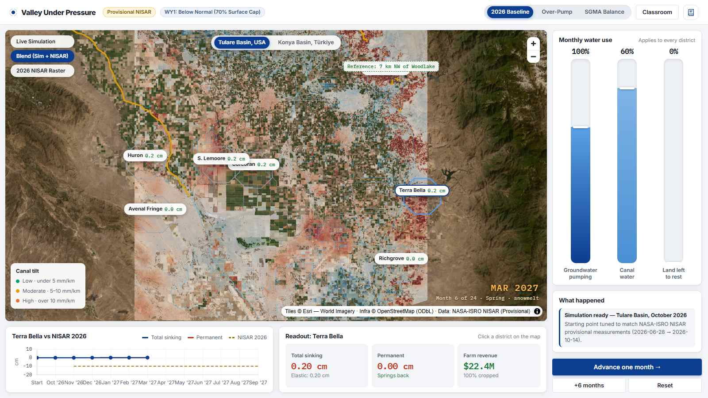

Stop 1 of 6 · Intro & 01 Atlas (0:00–0:30)
Where is the ground sinking? 29 basins on one 93-day ruler.
We turned the first months of NASA-ISRO NISAR radar data into a self-checking global subsidence atlas: 29 basins (16 reliable, 13 indicative) measured with one open pipeline on the same 93 days (28 Jun – 29 Sep 2026), led by Konya Plain at −11.0 cm/100d (medium, caution).
Source: Data: NASA-ISRO NISAR, ASF DAAC. Analysis: Team Aseltech (data/global/atlas.json, data/global/home_summary.json).
| Rank | Region | Common (cm/100d) | Confidence |
|---|---|---|---|
| 1 | Konya Plain (Türkiye) | −11.0 | medium (caution) |
| 2 | Eloy (USA) | −8.6 | high |
| 3 | Central Valley (USA) | −7.3 | medium (GNSS r=0.924) |
| 4 | Kashmar (Iran) | −7.0 | high |
| 5 | Mashhad (Iran) | −6.9 | medium |
Stop 2 of 6 · 02 Self-Checking QC (0:30–1:00)
A check that catches our own errors
Automated time-series checks flagged 12.1 cm full L-band phase-cycle jumps; Semarang dropped from −12.1 to −6.2 cm (#7 reliable), Tehran updated −3.5 to −7.4 cm, and 5 flagged basins stay indicative only.
Source: Analysis: Team Aseltech (tools/atlas_qc.py, data/global/qc_flags.json, data/global/atlas_changelog.json).
Stop 3 of 6 · 03 GPS & Validation (1:00–1:30)
Proof on the ground and uncertainty
Provisional NISAR motion tracks 10 permanent Central Valley GPS stations (r = 0.924, 1.00 cm median RMSE), beats ≈ 0.3 cm formal phase noise, and includes a Mexico City OPERA pattern check (r = 0.912, winter vs summer).
Source: Data: NASA-ISRO NISAR, ASF DAAC; NGL GNSS; NASA JPL OPERA. Analysis: Team Aseltech (data/central_valley/validation.json, data/global/opera_check.json).
Stop 4 of 6 · 04 People & 05 Water Lost (1:30–2:00)
1.20 M people on sinking ground & 0.3174 km³/yr water lost
Overlaying GHSL 2025 population counts 1,200,716 residents on 511.65 km² sinking > 5 cm, while 11 months of NISAR data isolate 0.3174 km³/yr of permanent Central Valley aquifer storage lost.
Source: Data: NASA-ISRO NISAR, ASF DAAC; GHSL E2025. Analysis: Team Aseltech (data/global/vital_signs.json, data/central_valley_fullyear/storage_loss.json).
Stop 5 of 6 · 06 Infrastructure & 07 Bulletins (2:00–2:30)
81 / 645 tilting corridors & 29 one-page bulletins
Every canal, road and railway in the Central Valley is screened for uneven sinking with uncertainty bounds, and every atlas basin gets a printable one-page NASA-style monitoring bulletin.
Source: Data: NASA-ISRO NISAR, ASF DAAC; OpenStreetMap. Analysis: Team Aseltech (data/central_valley/assets.json, tools/bulletin.py).
Stop 6 of 6 · 08 Simulator & 09 Open Engine (2:30–3:00)
A 30-second simulator & an open one-command engine
Test 24 months of pumping choices in Valley Under Pressure calibrated to NISAR rates, or reproduce any basin from public NASA ASF data with one open command.
Source: Model calibrated to USGS/NGL Terra Bella compaction and NISAR rates (game/model.js, pipeline/nisarpulse).
